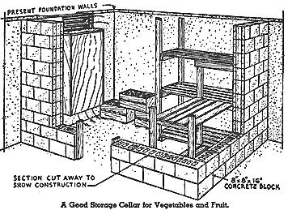
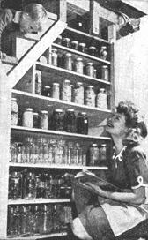
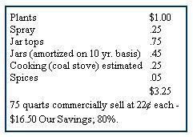
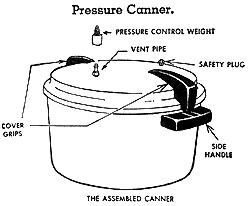
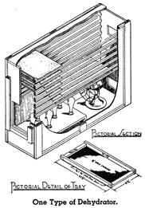

NOW we come to a part of the "Have-More" Plan that probably gives Ed and me the most satisfaction of all-preserving food in various ways so that we "live off the fat of the land" all year round.
Food preservation also has very practical compensations. Vegetables cleaned and prepared in the summer or fall save hours of shopping and of preparation in the kitchen during months to come. Furthermore, home preserved food costs less. For example, our home preserved tomatoes cost us about 5 cents per quart.
Folks today are lucky to have two wonderful modern ways of conserving food: quick freezing and pressure canning - besides that dependable old stand-by, the root cellar. One obvious rule applies to them all: use only the best of your fruits and vegetables, those just ripe and free from blemishes. If you take tough old string beans and freeze or can them, you're still going to have tough old beans. At first it hurts to throw away even one bean you've raised. But it isn't long before you realize you have plenty of the best and you can afford to give the few tough ones to the pigs or chickens.
If you want to keep your preserving to a minimum, enjoy your food to the fullest extent while it is at the height of its season instead of trying to have something different every day of the week. We certainly do not get tired of eating sweet corn nearly every day for weeks when it comes fresh from our own garden.
To show you how we have a lot of variety in our home-grown food with the least effort, here is a list of foods we emphasized, each in season. We don't claim we ate only these items at these times, but we used them primarily - we supplement our home-grown list with things we don't grow, for instance, seafood, beef, etc.)
SUMMER (July-September)
Fresh garden vegetables - tomatoes, peas, string beans, lima beans, beets, corn, cucumbers, lettuce, summer squash, egg-plant, new potatoes, etc. Fresh fruits, raspberries, strawberries, blackberries, etc. Broilers, roasters, rabbit. All kinds of frozen meat (from winter killing). Milk, butter, cottage cheese, eggs.
FALL (October-December)
Root cellar vegetables - cabbage, beets, carrots, turnips, Hubbard and acorn squash, potatoes, Jerusalem artichokes (leave in ground). Greens still in garden: kale, broccoli, chinese cabbage, collards. Stored fruits - apples and pears. Baked beans and stews. Chicken, fricassee or pies (culled hens), broilers and roasters. Other fowl - (geese, turkeys, ducks). Lamb, chevon, rabbit. Milk, eggs, cheese.
WINTER (January-March)
Vegetables and fruits - rest of those stored in the root cellar - some canned and frozen vegetables, fruits. Fresh pork or chevon, smoked hams and shoulders, sausage, bacon. Frozen or fresh chicken. Other fowl (as you cull). Rabbit.
SPRING (April-June)
Vegetables and fruits - canned or frozen. Spring garden greens, such as dandelions, beet tops, asparagus. Fresh rhubarb. Jerusalem artichokes, and parsnips left in garden over winter. Radishes, lettuce. Hams and bacon (cured in winter). Baked beans. Broilers, frozen or fresh. Other meats from freezer. Milk and eggs.
While we're making lists, here's one you'll find helpful in deciding whether to store, can, freeze or dehydrate the various vegetables from your garden.
Easy Storage: potatoes, carrots, beets, onions, winter squash, turnips.
Best for Freezing: all meats and poultry, snap beans, shell beans, lima beans, asparagus, peas, corn, all greens and berries.
Best to Can: tomatoes, snap beans, shell beans, soy beans, peas, corn and some fruits depending on your own likes.
Most Successfully Dried: soy beans, lima beans, kidney beans, peas, corn, onions, some fruits.
Cold Storage or Root Cellar
It so happens that the old trick of putting away root vegetables and some fruits in a cool, moist place is both easy and cheap and for certain things the best way to store.
The necessary conditions are a cool, moist atmosphere (temperature 35° up to 45°), darkness, and protection from rats and mice.
We are unfortunate in having a very small basement. What we would have liked is a cellar storage section about 10' x 6' and at least 6' high, for standing room and plenty of shelf space. A section of the basement can be walled off with economical concrete blocks or insulating board. Good insulation and a close-fitted insulated door are most important, especially if you have a furnace in the basement. A small window is also necessary in order to control the temperature within the storage unit. An earthen floor is best - it gives your storage the proper humidity. If you have a cement floor you must sprinkle it with water every day or two, or keep a bucket of water in the room. In basement storage it is also best to pack carrots, beets, and other root vegetables (except potatoes) in a barrel or crock with damp leaves or sand.
But don't hurry your harvesting to put the vegetables in storage. It is the early part of the storage period that is most dangerous. It's hard to get the temperature down to 40° or less when the weather is still warm so leave root crops in the soil until the ground is almost ready to freeze. Tomatoes, onions, squash and pumpkins, of course, have to come in before the first killing frost.
Squash, pumpkins and dry beans keep best in the attic, if you're lucky enough to have one that's warm and dry. Onions should be kept cool and dry.
Lettuce, spinach, broocoli, cauliflower, brussel sprouts, collards, kale and Chinese cabbage are hardy enough to survive light frosts and can even be left in the garden long after frosts if they are given protection with straw. We have been surprised how long you can eat right out of your garden, even in our cold New England climate. At times we have had some of these hardy vegetables in the garden until December. We've found, too, you can save your full-sized green tomatoes - just pull up the whole vine before the first frost and hang, or store the tomatoes in small baskets. They will gradually ripen if kept in a warm (not hot!)place.
But don't make one mistake we did! We didn't weed out the poor specimens at first and we lost a lot of our precious vegetables.
Bank storage space if you have a hill handy-can be made with concrete or heavy lumber walls and ceiling. It should be at least 6' x 5' x 5' high and covered with 3 feet of dirt. No extra moisture or damp packing is necessary. In fact, getting plenty of drainage is the main problem along with keeping out vermin.
There are other methods of storage: sinking a barrel upright in the ground which is not too satisfactory because it holds so little. Another is the trench method which is simply digging a trench below frost and lining with straw; vegetables are then added, and all is covered. Obviously, it's not easy digging vegetables out and you can't check up on them easily.
For people with small cellars like us or for those of you who are planning new houses with radiant heating (which doesn't require expensive cellar space), it might be possible to have shed-type storage space attached to the garage. Of course, the walls would have to be insulated, as with the other methods, and the thickness would have to be determined by the material you used. We have not tested out this idea but it would seem to be a workable plan.
Obviously, cold storage is such an easy way to conserve food that it is probably the first method you will want to take advantage of.
If you could take a peek in our freezer today, or any day, you would see an amazing, wonderful assortment of delicious foods. For on our miniature farm, nearly all activities lead to the freezer. Into it goes almost any thing and everything we can raise, plus items we buy. And the food comes out fresh whenever we want it - summer or winter. No other method of preserving food has ever made such a happy situation possible.
From the standpoint of abundance, we have eaten better on our homestead than we ever have before - and that includes the war years of scarcity and rationing. The chicken we take out of our freezer is tender, delicious. Yes, we have corn-on-the-cob and lush raspberries in January, and goodtasting greens as well as lots of other things from our past year's garden . . . and it tastes as good as it did fresh out of the garden.
Ed and I both believe the quick-freezer is one answer to man's long search for a way to harness the bounty of nature. At any rate, we know it's a way ordinary people like us can have more security and independence than we ever thought possible.
The freezer was one of the first big capital investments we made and after using it, it would still be the first if we were starting over again. Ed loves to say that if you want to get your wife interested in homesteading, just get her a freezer. I must admit it helped intrigue me with country living and now I'm glad it did, for I would never go back to the city.
A freezing cabinet cuts your cost of living and at the same time raises your standard of living. Even if you did not raise any of your own food you could buy fresh vegetables, fruits or meat in quantities at wholesale or seasonal prices and store them away. The cabinet should eventually pay for itself from your savings in such buying. It costs very little to run a freezer - about the same as an electric refrigerator.
Of course, if you raise your own food the savings are even greater. If you hunt or fish, you can put away some of your favorite wild duck or fresh trout for the time you couldn't otherwise enjoy such delicacies. Or you can even make some good trades with your friends - we have swapped some of our home grown fowl and meat for such tasty things as newly dug clams, fresh fish and that rare treat, venison.
You already know that in comparison with canned foods, many frozen foods taste better, look better and have more food value. We have even found that vegetables and fruits frozen immediately after picking are better than the so-called "fresh" stuff you buy in the market. When you stop to think how many hundreds or thousands of miles an out-of-season tomato or cauliflower travels to meet you you realize that the word "fresh" may mean a variety of things.
As a home-maker I have found there are many, many pleasures connected with our freezer besides its unequalled service in preserving foods. A freezer saves a tremendous amount of shopping time because you have your own little storehouse of vegetables, fruits and meats , ready to use. If you find you need a lot of fresh bread and don't make your own, you simply buy a large quantity and freeze it. What's more, you can freeze stale bread and when it defrosts, it's fresh again. Practically a miracle, isn't it?
A freezer has fascinating possibilities. Every fall we freeze lots of sweet apple cider at a cost of 2 cents a quart for morning fruit juice, or it's elegant for hot, mulled cider on a winter's evening. Also when I make stews, soups or home-baked beans, it's just about as easy to cook double or triple the amount needed and freeze some for future use. You can also freeze cakes and pies - or the dough to be used for pies and cookies. There seems to be no limit as to what a freezer can do.
If you are preserving your own foods, you'll find that freezing is far easier than canning. To show you how simple it is, here are the steps involved in freezing green peas:
1. Pick the peas from your garden.
2. Shell and wash the peas, discarding old or imperfect ones.
3. Blanch peas. That simply means placing peas in a colander or wire basket and immersing them in rapidly boiling water (at least a gallon to a pound of peas) for one minute. Then immediately immerse peas in cold running water.
5. Drain and pour peas in to a moisture-vapor-proof bag or container and seal.
Quick freezing fruits is absurdly simple. Take strawberries for instance. Remove stems, wash, cover with sugar syrup, package, freeze. When it comes to meats, it's nothing at all once the meat is cleaned and cut, ready for cooking. Just wrap and freeze.
There is a wide assortment of containers made especially for freezing - that is, vapor and moisture proof. I won't describe these here, for you will have to get a bulletin or book with complete directions if you are going to freeze foods.
We bought our freezer shortly before Pearl Harbor and paid $440 for it. It is a 13 cubic foot cabinet and holds approximately 700 pounds of food. The price we paid was high, but few freezers had been made at the time we bought ours. Now, many large companies are building them, with mass production the price is lower; $230 for one similar to ours.
Many people have been using frozen food lockers which have rented for $6-$15 a year. If the locker plant is situated conveniently to your home, you may prefer this method of having a frozen food supply. A locker plant usually offers the convenience, of packaging and cutting meat for you and also provides a place to hang and cool meat before freezing.
However, I personally prefer a quick-freezer at home where I can tuck away a few boxes of fruits or vegetables or a small quantity of meat as I find time to prepare them. When you are raising large quantities of your own food, it may become practical to use both a home freezer and a locker, as you would then have the convenience of both arrangements. Or another plan would be to build (or have built) your own freezer room and cool room.
From our own experience we have learned several things about buying and running a freezer. We made a serious mistake in placing our freezing cabinet in our garage where the temperature drops below freezing in the winter. We discovered that such low temperatures prevent the motor from operating properly, so we now have it in our "Harvest Room." After having our freezer break down once and losing some of our hard-earned foods, we know now that there should be some signal to warn you when the temperature rises above the danger point. There should also be instructions fastened on the freezer to tell you when and where to oil the motor. These things we learned from our one bitter lesson and we wanted to pass them along. It pays to buy a good cabinet from a reputable dealer and with so many new designs developed during the war years it will be wise to look over a number of freezers before choosing yours. Whatever your intentions are on using a freezer, we would certainly recommend getting one with a special compartment for quick-freezing your own food.
We certainly believe that food freez ers widely distributed will make as phenomenal a change in this country as did low priced cars. With a good freezer and a little piece of land you can be just about as independent and as secure as you wish. The freezer can be the secret of one goal all we Americans constantly work for - freedom from want. Anyhow, that's what our freezer means to us.
When guests come in unexpectedly for meals, Mrs. R. can serve a wonderful dinner on short order, complete with half-a-dozen meat choices, corn-on-the-cob, and fresh strawberry shortcake. If you want to interest your wife in home food production, plan to get her a quick freezer.
There was a time when practically every article written on canning started out with the old saw - "Eat what you can - and can what you can't."
Today, that's so far from reality it isn't even funny. Of course, you eat all you want during July, August, September and October directly from the garden. Then, as we've pointed out, it's easiest to utilize a root cellar. Next is preservation by freezing - if you're lucky enough to be able to use this wonderful new method. Then comes canning.
In all frankness, it is best to preserve certain things in glass jars - tomatoes, sauerkraut, pickles, stewed fruits, preserves and jelly. But canning, even with a pressure cooker, is more difficult than freezing and the results, minus the exceptions noted, are, we think, inferior to freezing.
I will say that the savings in canning your own fruits and vegetables instead of buying them is tremendous. I know that's contrary to what we've been told, but it's true because you do it all on your own place-you don't pay for all the traveling raw vegetables do to get to a factory and back in cans to grocery shelves. Take the popular tomato as an example - here is the cost of our 75 quarts of home canned tomatoes the b est we can figure it:
75 quarts commercially sell at 22 cents each - $16.50 Our Savings; 80%.
And we do not blush at saying our tomatoes are superior to what you can buy in taste, color and texture!
Prejudice had been built up against home canning by making it appear to be a back-breaking complicated chore. But we have found it fun by doing only a few jars each day in the summer instead of trying to do it all in a few days. It is pretty simple, especially with the help of the booklets put out by the canning jar companies. We happen to have a Kerr booklet (Kerr Glass Manufacturing Co., Huntington, W. Va.) which cost 10 cents and which led us successfully through all our canning, though neither Ed nor I had ever canned before.
Canning is not complicated but it does require accuracy. To make the work easier, get all your equipment ready to use before you actually prepare the food. And by all means do your preparatory work in a pleasant place. At first we did ours on our back terrace, but now we have our delightful "Harvest Room."
It is usually suggested that you plan 100 quarts of fruit and vegetables for each member of your family, but if you are seriously trying to be self-sufficient and are preserving food only by canning we believe you would want somewhat more. However, the first year aim for the 100 and the next year you'll be able to adjust the amount to your own needs. The 100 quarts should be approximately divided into one-third fruits, one-third vegetables and one-third tomatoes or tomato juice.
That figure sounds rather forbidding doesn't it, from the standpoint of quantity and time to preserve? Let's take up the question of quantity. In the case of apples, one bushel produces about 20 quarts; cherries, 24 quarts; peaches, 25 quarts, plums, 30 quarts; berries, 24 quarts. That is a good deal more of each fruit than any one person will eat during the non-productive season. So to achieve your goal you would only have to can a few quarts of each fruit as it came in season. The same principle applies to vegetables.
As for canning equipment, by all means try to get a pressure canner. It is recommended by all authorities as the safest way to can your vegetables properly and it saves time, fuel and work.
Still unknown to thousands of families the pressure canner is also a miraculous cooker. It will cook a complete meal in 10 to 15 minutes, including soup, roast and vegetables! Using little water, it saves valuable vitamins and minerals. It tenderizes cheaper cuts of meat. It can preserve surplus meat, poultry or fish, although we believe that the quick-frozen method is best.
As for pressure cooker size you will want an 18 quart canner (holds 5 quart jars) or a 25 quart size (7 jars). With the canner you will receive a booklet giving you a time table for processing and general directions for canning.
Even if you don't go in for all the "Have-More" Plan , we believe in "canning all you can" anyway - and that goes for peace time as well as during a war or a depression. Believe me, it will give you a tremendous feeling of satisfaction and security when you begin to line up the jars on your shelves. Ed is just as proud as I am to point to the canning shelf and say, "I canned those bread and butter pickles." Such bragging is good for the soul - it's one of those intangible satisfactions you get from homesteading.
Another easy way to keep certain vegetables is to salt them down. The one big fault with this method is that it destroys a lot of the vitamins and minerals. For this reason we have not done any brining (except to make sauerkraut, ham and salt pork).
Everybody knows about salting cabbage to make sauerkraut. I put mine up in jars as I have found this even easier than the crock method. It is also possible to salt away corn, beans, cauliflower, turnips and peppers.
Alternate layers of washed vegetables and salt are packed into earthen crocks and weighted down. If enough brine to.cover vegetables completely is not formed, a concentrated brine made with boiling water may be added. Use 3 1/4 cups of salt (common or coarse salt is better than fine tablesalt) to 6 quarts of water. Keep in a cool place - the vegetables are ready to use at any time.
To desalt for use, put salted vegetables in a big pan, cover with cold water, heat to luke warm, stir and pour off water. Repeat until vegetables are only slightly salty. Then you can cook in regular manner.
During the early part of the war I read a lot of articles telling how wonderfully easy it was to dry your vegetables and fruits at home. Well - in our attempt to carry out miniature farming in the easiest, most modern way, we borrowed one of the very best home model dehydrators which set back one of our neighbors about $40.
We soon found that proper dehydration is not so terribly simple after all. It takes as much preparatory work as canning and it is more difficult than freezing foods. We think its worst feature is the long drawn out drying process. It takes 10 hours just to dry the food thoroughly; you can scarcely complete the project in one day.
In our section of the country where there is much moisture in the air, dehydrated food should be packed in tightly sealed jars so it won't absorb water again until you use it. And when you do, dried food takes pre-soaking to return it to its normal state.
We do not believe home dehydration will ever be widely used in America except where it is specifically desirable for reasons of taste, geography or space. Frankly, we couldn't stand the taste of the three things we tried - snap beans, spinach and broccoli. But if your family is extremely fond of dried beans and peas then it would be worthwhile to dry them. Also, we all know that certain fruits are splendid dried.
If you are interested in drying foods, we suggest you try it out in your cooking oven first and see if you like the idea. You'll get about the same results you'd get with a special machine. Place oven door open and set the temperature at 165°. You'll have to get the length of time for drying your specific vegetable or fruit from an instruction booklet. Then freshen up the dried samples, cook them and see if you like them. If you do approve, you can either buy or build a dehydrator.
You can build a dehydrator using a small electric fan and a bathroom heater but the thermostat is quite important. It is probably just as well to buy the whole dehydrator or else use your oven. Detailed building plans may be obtained from your County Farm Agent.
We'd suggest you read a little booklet called "Dehydrating Fruits and Vegtables," put out by General Electric Company, Schenectady, N. Y. It costs 10 cents but it is well worth reading before you decide to go in for dehydration.
ABC of Home Freezing , $1.00. The Countryman's Cookbook, the ideal cook book for the country place. De licious and wholesome ways to cook food you raise yourself. ($3.25)
|
 |
 |
|
|
 |
 |
 |